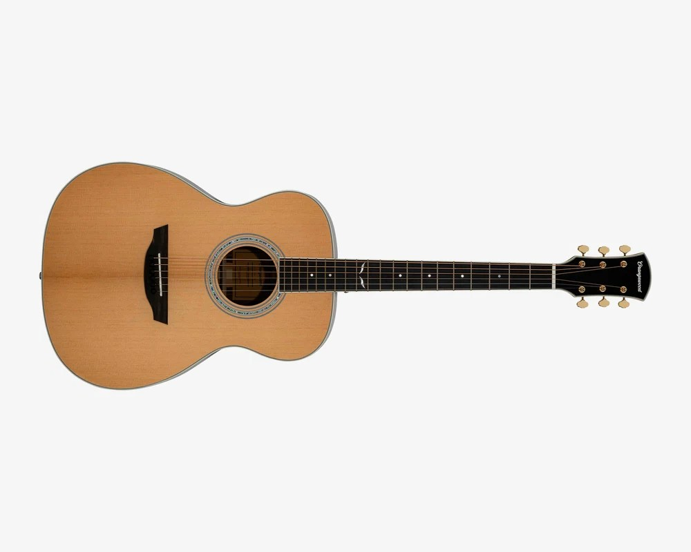
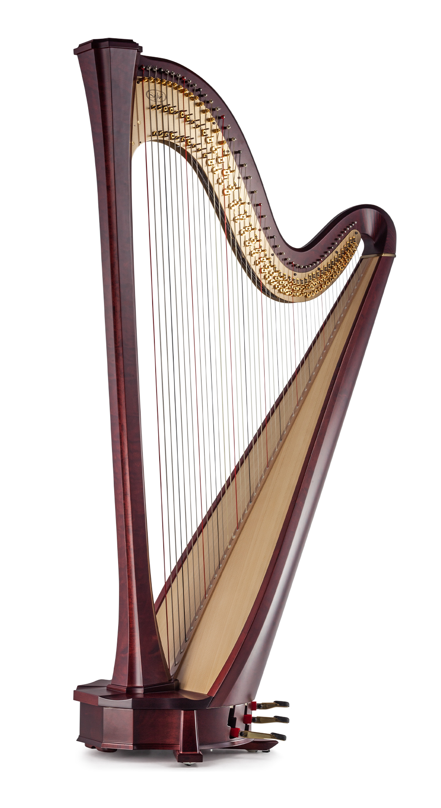
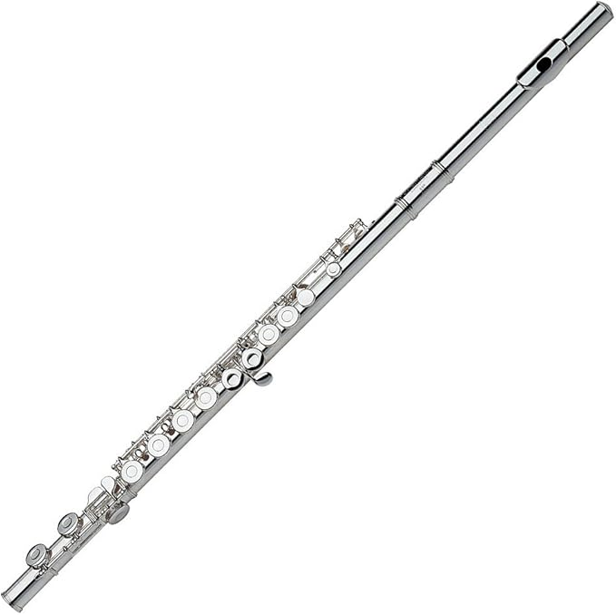
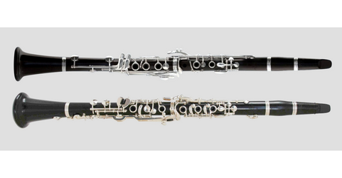
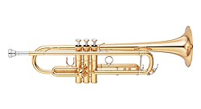
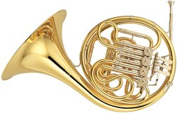
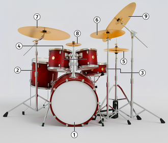
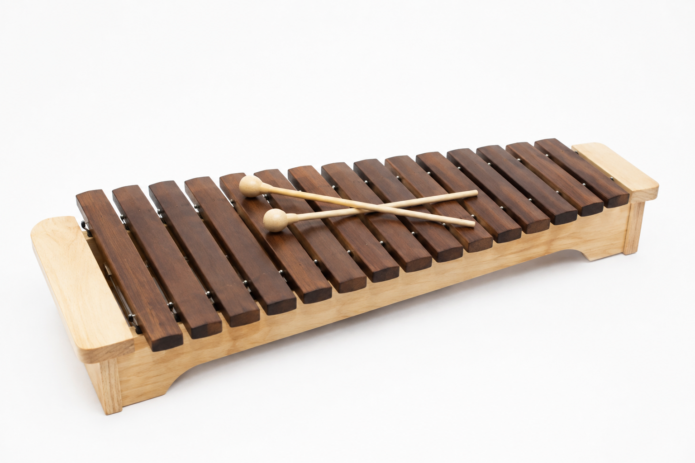
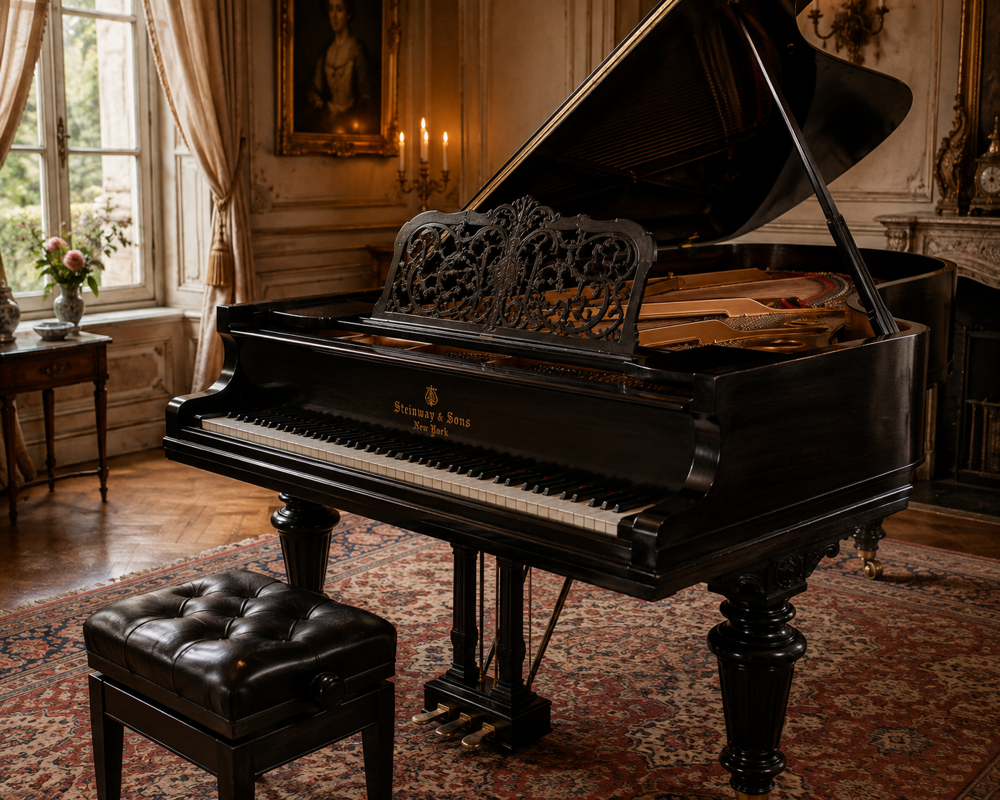
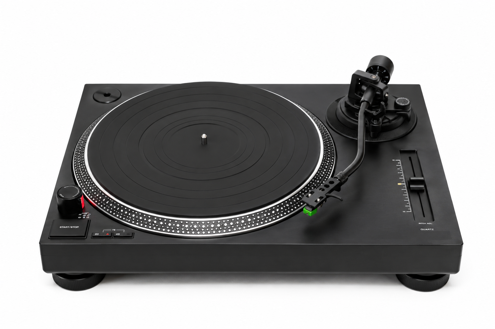

Explore by Family
Click a family to filter, then click any instrument for more detail

Strings
Violin
A bowed string instrument known for its bright, expressive tone.

Strings
Guitar
A plucked string instrument central to nearly every popular genre.

Strings
Harp
One of the oldest string instruments, plucked by hand.

Woodwind
Flute
Played by blowing air across an opening for a light, airy tone.

Woodwind
Clarinet
A single-reed woodwind with a warm, versatile tone.

Brass
Trumpet
A bright, powerful brass instrument used across many genres.

Brass
French Horn
Known for its warm, mellow tone in orchestral brass sections.

Percussion
Drum Kit
Drums and cymbals forming the rhythmic backbone of a band.

Percussion
Xylophone
Wooden bars struck with mallets for bright, pitched tones.

Keyboard
Piano
A percussive-string hybrid with wide dynamic range.
Electronic
Synthesizer
Generates and shapes electronic sound with oscillators and filters.

Electronic
Turntable
Originally a playback device, turned into a performance instrument.